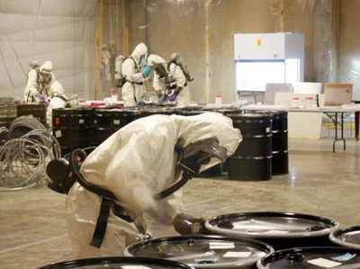
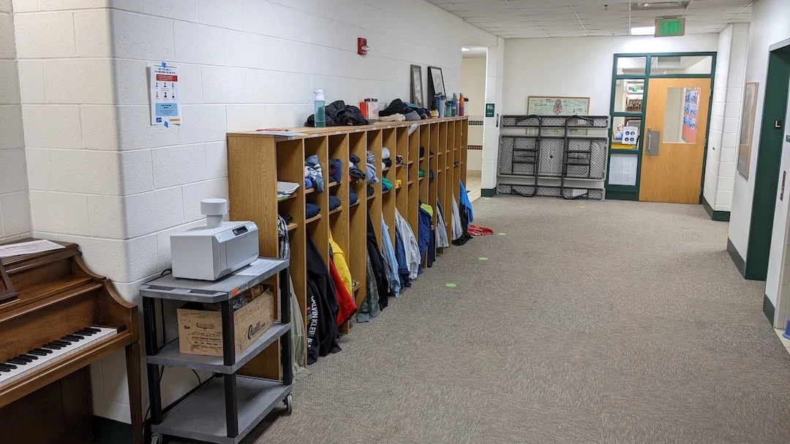
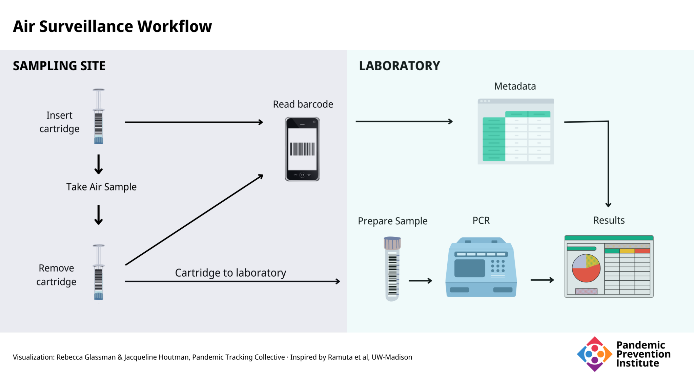
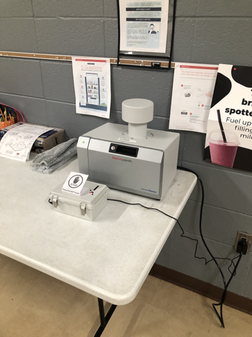

There’s Something in the Air: Monitoring Indoor Air for SARS-CoV-2
Air surveillance in indoor spaces where people gather can be an important complement to clinical and wastewater data.
This piece is originally published at rockefellerfoundation.org/blog/theres-something-in-the-air-monitoring-indoor-air-for-sars-cov-2/
Public health decisions about Covid-19 depend to a large extent on knowledge about the level of SARS-CoV-2 circulating in a community. Clinical data obtained from individuals through nasal swab samples is crucial, but with a decrease in case reporting, in part due to increased home testing, the data needed to estimate disease prevalence is becoming less reliable. As an important complement to clinical data, monitoring of the physical environment for the presence of the virus—and for viral variants— is essential for informing public health decisions, detecting outbreaks, and preventing future pandemics.
SARS-CoV-2 in the Environment
Of the methodologies for environmental surveillance, wastewater monitoring has received the most attention. Wastewater has proved to be a valuable addition to the public health toolbox. Since SARS-CoV-2 is shed in feces, it can be detected in sewage as it flows to wastewater treatment facilities. The percentage of infected individuals who shed virus in the feces varies, however, as does the amount of viral RNA shed. Viral variants may also differ in the amount of fecal shedding. Analysis of wastewater introduces complexities that can make interpretation difficult. Monitoring for SARS-CoV-2 in a variety of environmental contexts would provide a more complete picture of the viruses circulating in a community.
As a respiratory pathogen, the most relevant surveillance for SARS-CoV-2 would involve exhaled air. Virus from respiratory droplets falls on surfaces, and early studies showed viral RNA could be detected on these surfaces for days. It eventually became clear that transmission of Covid-19 is primarily through aerosols, not respiratory droplets and that surface virus is a poor indicator of viral load in an environment. Detecting virus on a surface does not imply that it is infectious, and exuberant disinfection of surfaces (“hygiene theater”) was determined to be less effective at preventing the spread of Covid-19 than strategies to mitigate aerosol transmission, such as masking and ventilation. Airborne virus is thus a logical target for monitoring.
History: From Canaries to Anthrax
For centuries, diseases were thought to be caused by miasmas, or “bad air.” Today, we know that pathogens and pollutants in the air can indeed make us sick. Air surveillance for pollutants goes back as far as the 19th century with literal canaries in coal mines, which would die if carbon monoxide levels got too high (a practice that was continued until 1996). Sampling air specifically for microorganisms began in 1861 with Louis Pasteur. In the 1930s, William Firth Wells developed an “air centrifuge” to detect pathogens, including influenza virus, from the air. Mechanical methods for sampling air to measure air pollution were first developed in the 1940s. Air sampling technology progressed over the decades, but accelerated in the aftermath of the terrorist attacks of September 11, 2001, with an increased awareness of the threat of bioterrorism.
Beginning in late September 2001, several letters containing a powdered form of the anthrax bacterium (Bacillus anthracis) were mailed to prominent members of the media and Congress. Ultimately, 17 individuals who handled those letters became ill, and five died. (Anthrax can be transmitted by several routes, but inhalation anthrax is the most deadly form of the disease.) In response, the US Department of Homeland Security developed the BioWatch system in 2003. The US Centers for Disease Control and Prevention (CDC), which had analyzed the powder in the letters, addressed anthrax as a potential bioterrorism agent. The CDC evaluated several methods for sampling air for B. anthracis at a contaminated US Postal Service processing facility in Trenton, New Jersey.

When mail delivered to Capitol Hill was suspected of anthrax contamination, it was collected for analysis. Air samplers were used to monitor the containment area for B. anthracis. Image Credit: US Federal Bureau of Investigation.
Air Sampling Science
There are several methods for sampling air.
- Passive sampling allows suspended particles to fall through gravity onto collection material, such as agar plates or an adhesive surface.
- Electrostatic precipitation applies an electric current to the air, ionizing it. As aerosols and droplets collide with the ionized air, they become charged and are attracted to an oppositely charged electrode.
- Active filtration involves passing air through a filter and analyzing the material that is collected on the filter. A wide range of filter materials have been used in this type of sampler.
- Impingers and impactors are active forms of sampling that force air onto the surface of a liquid or solid collection material, sometimes first forcing the air through slits or sieves of known size to limit the size of the particles collected. In the abovementioned anthrax study, an impactor was found to be the most sensitive of the methods tested.
Proof of Concept: Laboratory Studies and Controlled Environments
Numerous studies have been performed to assess the effectiveness of air sampling for SARS-CoV-2 using different methods of sampling. Passive and electrostatic methods were found to be relatively ineffective for detecting respiratory viruses in the air. Early studies were performed in laboratory and health care settings, or in rooms where Covid-19 patients were being isolated. In one study, using an impaction-based sampler in a dormitory isolation room, for example, increased symptoms in patients was associated with a higher aerosol viral load, while improved ventilation decreased the amount of virus detected in the air.
The Real World
Once proof of concept had been established, the next step in developing an air surveillance strategy was to move from highly controlled situations to sites where substantial numbers of people gather naturally, in real life. In a project supported by The Rockefeller Foundation’s U.S. Regional Accelerators for Genomic Surveillance, researchers at the University of Wisconsin-Madison performed air surveillance in 15 sites, including rooms in hospitals, schools, and athletic buildings, as well as establishments serving food and beverages.

The size and portability of air samplers, as seen on the left in this school study site, can make them very useful in monitoring for airborne viruses in localized settings, like particular hallways or classrooms. Photo Credit: O’Connor Labs, UW-Madison
To perform the surveillance, the researchers used an impactor-type air sampler with cartridges that were simple to change with minimal training, allowing individuals at the site such as staff or students to replace cartridges, which are the size of a 10 cc syringe. A barcode system kept track of samples using a mobile phone app. The barcode on the cartridge was scanned when it was inserted and removed from the sampler, and metadata about the location (via GPS) and sampling time was automatically recorded. In the laboratory, the contents of the cartridge were removed and analyzed by quantitative PCR (qPCR).

Results
Daily, over the course of 29 weeks, 527 samples were collected, 106 of which were positive for the presence of SARS-CoV-2. In one example, when an outbreak of 20 confirmed cases occurred at one site, positive air samples were detected 7 days before the first confirmed case was reported. These findings demonstrate the utility of air surveillance and that it can be part of an effective public health strategy, particularly for keeping places like classrooms and hospitals virus-free. Some samples obtained in the study underwent genomic sequencing and all of them contained mutations characteristic of the variants (i.e., Delta and Omicron) that were predominant at the time samples were taken.
The group expanded the study to test weekly for the presence of 40 additional pathogens, including bacteria, viruses, and fungi. They detected 16 pathogens in eight sites, and noted distinctive patterns. For example:
- Bocavirus, which is typically found in respiratory infections in children under two years of age, was only found in sites where there were young children.
- Influenza A virus was detected in on-campus sites during an influenza outbreak at the University of Wisconsin-Madison.

The convenience of air samplers means they can be used in many public settings, which also provides an opportunity to educate the public on what they are and why air surveillance can be an important part of the public health pandemic toolkit. Photo Credit: O’Connor Labs, UW-Madison
The Advantage of Air
While wastewater surveillance has been demonstrated to be a crucial tool in the public health response to Covid-19 in a community, this study, and others, illustrate the usefulness of monitoring the air for SARS-CoV-2 in indoor spaces. Air surveillance does have some advantages over wastewater surveillance that may make it a preferable method in some situations.
- There is no need for a centralized sewer. Air sampling can be performed anywhere people breathe, without the requirement that they use a bathroom.
- It is safer. There are no manholes to climb into or exposure to raw sewage (which can contain other pathogens).
- There is no technical expertise required to collect samples.
- It is portable and can easily be moved from room to room within a building. (The unit used in the UW-Madison study weighs less than 30 pounds.)
- It can be targeted in space and time. For example, it can be used for individual events or gatherings. Mitigation efforts can then be deployed very precisely.
The Challenge of Air
As with wastewater surveillance, the methods and equipment used by investigators can vary greatly and must be standardized. In addition, wastewater is generally sampled from defined streams; it flows through pipes. Air circulates in a much less defined way, and is more difficult to quantify. The placement of the sampler can affect the usefulness of air monitoring, and an inappropriate placement may not reflect the actual viral content of the air, causing a misleading measure of the risk of transmission in a room. Some factors that can affect airflow and viral spread in a room include:
- Temperature gradients
- Humidity
- The number and activity level of people
- Shape of the room
- Open windows and doors
- Effectiveness of HVAC system
The sampler used in the UW-Madison costs approximately $5,000 for a unit that can sample one room at a time, reflecting a substantial startup cost. Cartridges and testing add additional expenses. Wastewater monitoring also has significant startup and testing costs, but expenses for both systems can be limited by optimizing sample location and timing.
There are also ethical questions about what to do with positive results. Because of the way the experiments were conducted by the UW-Madison group, it was not possible to use that information to intervene in that particular outbreak, but positive results could be a signal to increase public health measures in an area. Maintaining the privacy of the individuals involved may be challenging.
Future Directions
Monitoring air for SARS-CoV-2 is not yet in widespread use. The technology and methods for air monitoring continue to be developed, refined, and standardized.
- One of the more important variables in air sampling is the placement of the sampler for optimum detection of airborne virus. Since humans exhale carbon dioxide (CO2), monitors to measure CO2 levels can be used to assess the amount of exhaled air in a room. Measuring levels of CO2 can thus be a way to optimize sampler placement to better detect virus.
- In the UW-Madison work described here, sampler cartridges were transported to a laboratory for analysis, resulting in a delay in determining the viral content of the sampled air, and thus a delay in implementing appropriate mitigation measures. Real-time detection of aerosol virus is under development by numerous groups, including those in the United States, United Kingdom, Canada, and South Korea.
- Improved ventilation and filtration of indoor air is known to reduce the risk of viral transmission. Integrating air filtration with air sampling would allow simultaneous mitigation and monitoring.
- Researchers at Yale University are developing personal, wearable monitoring devices.
Expanded monitoring of indoor air for SARS-CoV-2 can act as an important complement to clinical and wastewater data. Air surveillance also shows promise for detecting other airborne pathogens and will be an important tool for detecting future outbreaks and possibly identifying early indicators and warnings for future pandemics.